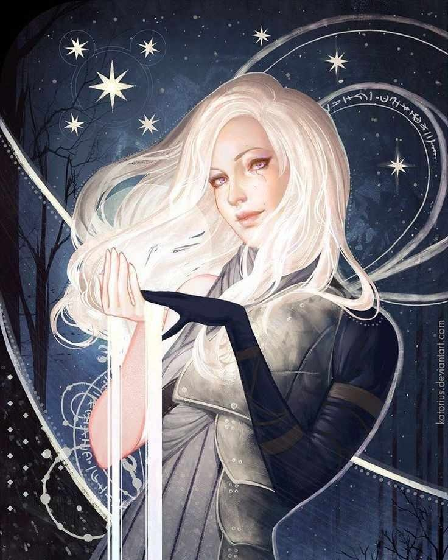
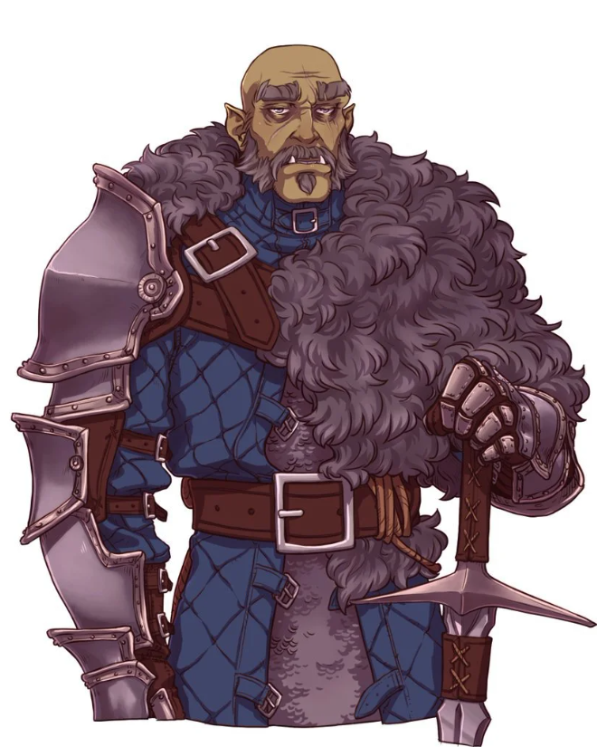
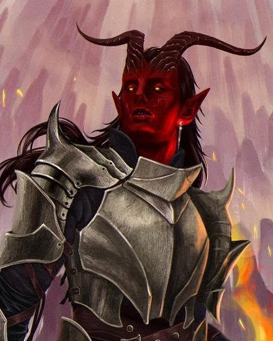
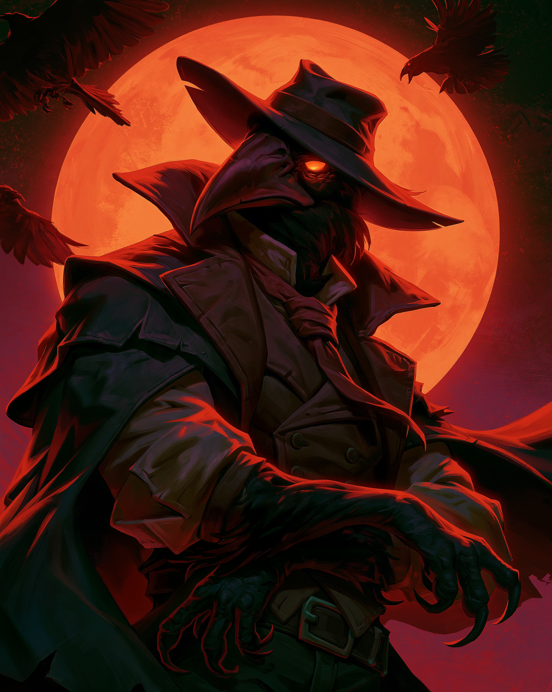

03
DRUŻYNA
Ostatni zapis
zespołu.
To miejsce na pełne dossier postaci: portret, informacje o bohaterze, historię i najważniejsze wydarzenia z kampanii.



04
PARAMETRY KAMPANII
06 → 17
Kampania została przygotowana jako długa przygoda rozwijająca się wraz z kolejnymi poziomami i etapami wyprawy.
NASTĘPNY PLIK